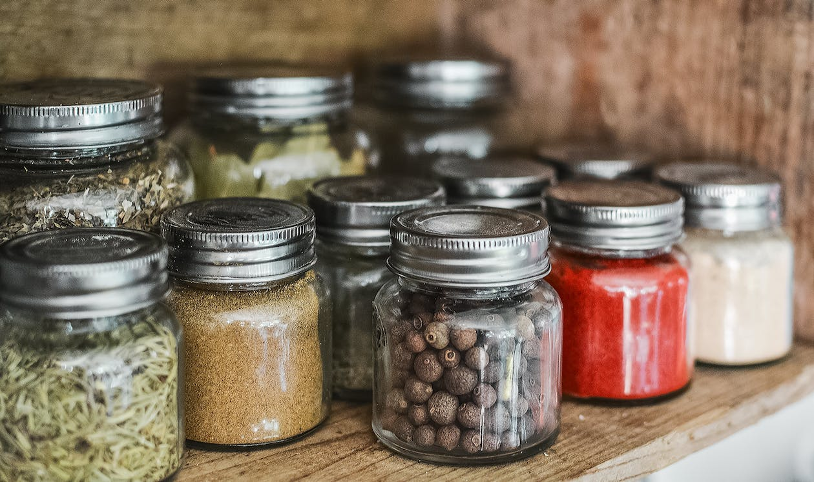

Always Keep A Food Supply
Having an up to date food supply can sometimes be the difference between life and death. It's all about PREPARATION! PREPARATION! PREPARATION! What kinds of foods are great to keep on hand? How often should you switch out your food? What are some good labeling and organizational practices? How will you cook when the power goes out? These are the questions I had when I first started building my food supply and it all seemed overwhelming. The task seemed too large and the problem too big. Then I thought of my wife and infant son. What would happen to them if our food source were cut off for a week? Two weeks? This posed an even greater obstacle to climb, one I hoped I would never have to endure. So I took things one day at a time, block by block and brick by brick.
The best place to keep food storage, in my opinion, is somewhere dry and cool. This can be your basement, closet, under the bed, or your pantry. This can help keep food from spoiling, ensuring it lasts longer. You're going to want to stock up on lots of dried foods such as rice, oatmeal, pasta, flour, grains, or dried beans. I would next advise canned goods, but these can have a shorter shelf life, so it's important to keep track of expiration dates and switch out foods that are about to go bad.